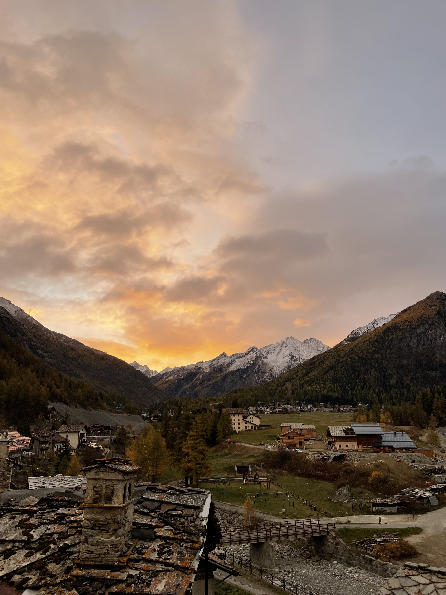
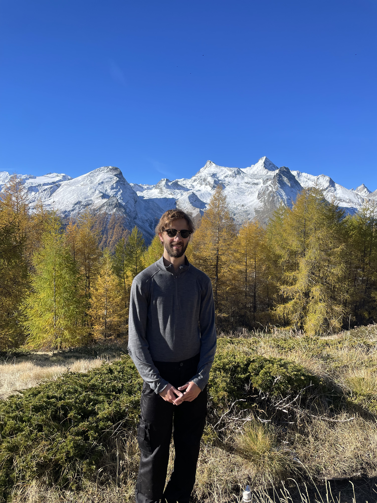

← Travel
Cogne 2025
We planned an intense weekend of climbing and cycling, our first of this magnitude! Did we make it back alive and well....

27th October 2025
Yesterday we had made the long journey to Cogne from Venice by two trains and then two busses for a total of 6h travel time. We arrived as it got dark from Aosta valley and met our host and accomodation for the next few days. We didn't see much the previous night but as we woke up the following morning we were stunned by amazing views of the valley. Our bedroom opened up with an Eastern view of the alps. The weather was unfavourable with drizzle and stronger winds so we spent the day relaxing in the beautiful wooden appartment playing cards and eating! We scouted out potential walks for the next day as the weather would be fairer. The town of Cogne was a short 15min walk from where we were staying so we stocked up on supplies and had a look at the surrounding small towns which dotted parts of the valley.

28th October 2025
The pink and orange streaks indicating sunrise over the alps woke us in the morning and were signs of the better weather. We packed and set out to walk up to a peak north of Cogne and closer to the town of Gimillan. Tsaplana had a peak approximately 2800m above sea level, which meant we had 800m of elevation to climb. We took a free shuttle up to Gimillan and started our hike through the charming town and into Alpine forest territorry where we found Swiss pines, Larches and squirrels. We crossed over into Alpine meadow where the snow started to appear. On the way we discovered Juniper berry bushes which smelt astonishingly strongly of gin. We had now come out of the thick trees and discovered surroinding snow capped peaks of the alps. The views were stunning.We reached an emergency shelter which had not been used for a while but at this point the trail had become covered in snow. We still had 15 minutes to the peak but without proper shoes or clothes we were hesitant. We scrambled up the trail, our shoes become drenched and loose rock slipping out as we grasped for stabilising rock lest the icy terrain caused our feet to slip out. I scouted ahead and found the path closer to the top more agreeable so we forged on and eventually reached the top to be greeted with a 360 degress view of a large part of the Aosta valley. While we took a moment to rest, we admired a not to distant peak connected to our route a further 1000m ascent. Mont Blanc was barely visible to the west but was almost lost among the sea of peaks covered in powdery snow. Eventually we had to make our way down just as other hiker began to arrive. The jounrey down was a bit more treacherous on the snow covered trail. We had other hikers compacted steps to use but still Sophie and I both took some slips into the snow on account of our poor equipment... Eventually we made it back down and sunk back into our comfortable accomodation to a deserved rest. The next day we would hop on our busses and trains back to Turin before Sophie's trip back to London.